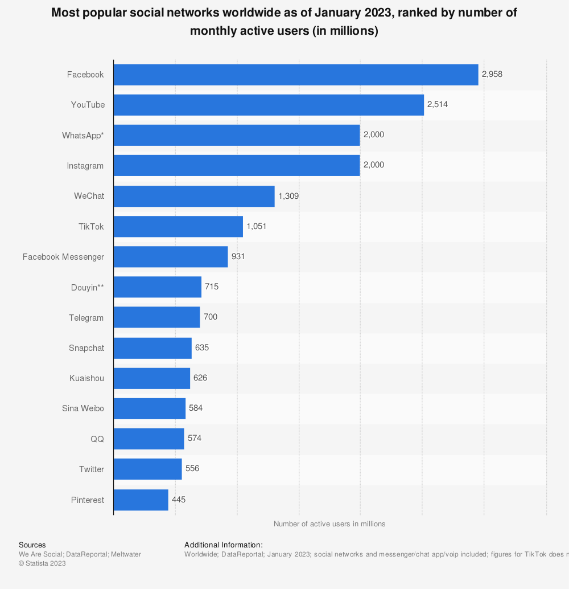

1. O porquê da produção de vídeos
A produção de vídeos tem vindo a ganhar cada vez mais relevância em qualquer estratégia de comunicação em qualquer estratégia de comunicação.
Com o crescimento de redes sociais que priorizam o formato vídeo, como o YouTube, o TikTok e o Instagram, os vídeos tornam-se cada vez mais o melhor formato para impactar a tua audiência.


No contexto atual, a produção de vídeos poderá ser a chave para facilitar a divulgação da tua marca.
Neste artigo exploramos um pouco de cada tópico em que consiste a produção de vídeo. Desde os benefícios de produzir vídeos impactantes até a alguns exemplos de projetos para que te possas inspirar.
2. Vantagens da produção de vídeo
A produção de vídeo oferece algumas vantagens únicas quando comparada com outros formatos de comunicação. Estas vantagens são comuns tanto para empresas como para artistas.
2.1. Maior interação
Um dos principais pontos de diferenciação do vídeo, é a interação que o mesmo cria com o utilizador. Num mundo em que o tempo de atenção do público é cada vez mais reduzido, criar vídeos vai ajudar a reter a atenção do teu público-alvo.
Esta vantagem acontece devido à combinação de elementos visuais e sonoros que é possível fazer com o audiovisual.
2.2. Aumento do alcance
Como já referimos acima, grande parte das redes sociais dá mais visibilidade aos conteúdos vídeo.
Porque é que as redes sociais estão a beneficiar o conteúdo vídeo?
As redes sociais favorecem o conteúdo vídeo ao seu modelo de negócio, as mesmas ganham dinheiro ao vender o seu espaço a empresas e artistas que querem divulgar os seus produtos, serviços ou arte. Quanto mais tempo conseguirem reter os utilizadores melhor, mais anúncios vão conseguir vender.
De forma resumida, temos percebido que um vídeo tem a probabilidade de chegar a mais pessoas do que uma imagem ou apenas um post de texto, claro que tudo vai depender do tipo de conteúdo publicado.
2.3. Fortalecimento da tua marca empresarial ou marca pessoal
A produção de vídeo oferece uma forma autêntica e mais próxima de mostrares a personalidade da tua marca e de transmitires os seus valores.
Aos criares vídeos com uma identidade visual e uma mensagem consistente, poderás fortalecer a tua marca e construir uma relação mais próxima com os teus clientes.
2.4. Melhoria da descoberta do teu trabalho através de SEO
Os motores de busca, como o Google, valorizam o conteúdo de vídeo de alta qualidade e relevante. Ao incorporares vídeos no seu website e ao partilhares os mesmos no YouTube, podes melhorar o SEO do teu site e aumentar a visibilidade nos resultados de pesquisa, também chamados de SERP (Search Engine Results Page).
2.5. Tendência para o aumentos das taxas de conversão
Os vídeos têm o poder de influenciar as decisões de compra dos consumidores. Os vídeos permitem demonstrar produtos e serviços de uma forma mais clara e persuasiva, o que aumenta a probabilidade dos clientes comprarem de ti.
2.6. Medição e análise da performance dos vídeos
Através de ferramentas de análise e métricas disponíveis nas plataformas de vídeo, podes medir o desempenho dos teus vídeos e obter informações valiosas sobre o comportamento do teu público-alvo. Falamos em detalhe da análise de métricas de vídeo no nosso Guia: Sabe como potenciar o teu negócio com vídeo.
A produção de vídeo é uma ferramenta poderosa que oferece inúmeras vantagens para as empresas que desejam destacar-se num ambiente digital cada vez mais competitivo. Ao aproveitar os benefícios do vídeo, podes impulsionar a tua marca, cativar o teu público-alvo e melhorar os resultados dos teus esforços de marketing.
3. O papel de uma produtora de vídeo
Uma produtora de vídeo desempenha um papel fundamental na criação de conteúdo audiovisual de qualidade, desde a conceção até à entrega final. O trabalho conjunto entre a produtora e o cliente são cruciais para garantir que os vídeos produzidos atingem os resultados esperados.
Uma produtora de vídeo vai ajudar-te nas seguintes fazes:
- Planeamento e estratégia
- Desenvolvimento de ideias
- Guião e Storyboard
- Produção e filmagens
- Edição e pós-produção
- Distribuição e promoção
- Resultados e métricas
Para te ajudar a prever o tempo necessário até retornares o teu investimento em vídeo criámos uma calculadora de rentabilidade de vídeo.
4. Tipos de vídeos para empresas
A produção de vídeos para empresas abrange uma ampla gama de formatos que podem ser utilizados para alcançar diversos objetivos de marketing, comunicação e branding. Cada tipo de vídeo tem o seu propósito e apela a diferentes públicos-alvo. Vamos explorar alguns dos tipos de vídeos mais comuns para empresas.
4.1. Vídeos institucionais
Os vídeos institucionais fornecem uma visão geral da empresa, incluindo a sua missão, valores, história e equipa. Estes vídeos ajudam a estabelecer uma ligação emocional com o público, transmitindo a personalidade da marca e a tua identidade única.
4.2. Vídeos de produto ou serviço
Estes vídeos destacam um produto ou serviço específico, mostrando-o em ação e destacando os seus benefícios e características. São uma forma eficaz de demonstrar o valor que o produto ou serviço pode trazer aos clientes.
4.3. Vídeos de explicação ou tutoriais
Os vídeos de explicação ou tutoriais demonstram como usar um produto ou serviço. São ideais para mostrar passo a passo como tirar o máximo partido dos produtos, simplificando processos complexos e esclarecendo dúvidas.
4.4. Vídeos de depoimentos de clientes
Os depoimentos de clientes testemunham a satisfação dos clientes. Estes vídeos destacam histórias de sucesso dos teus clientes e como a tua empresa impactou positivamente as suas vidas.
4.5. Vídeos de histórias de sucesso
Semelhantes aos depoimentos, os vídeos de histórias de sucesso focam-se em casos específicos de sucesso em que a tua empresa desempenhou um papel crucial. Estes vídeos contam a jornada do cliente, desde os desafios enfrentados até aos resultados alcançados.
4.6. Vídeos de eventos e conferências
Estes vídeos capturam momentos chave de eventos, conferências, feiras ou workshops na / da tua empresa. São uma forma de partilhar com o público as experiências e conhecimentos adquiridos durante essas ocasiões.
4.7. Vídeos de anúncios e promoções
Os vídeos de anúncios e promoções são curtos e impactantes, projetados para atrair a atenção do público-alvo e promover ofertas especiais, descontos ou lançamentos de produtos.
4.8. Vídeos educativos e conteúdo de valor
Estes vídeos fornecem informações valiosas ao público-alvo, mostrando a expertise da tua empresa num determinado campo. São uma forma de construir autoridade e estabelecer a empresa como líder de no teu nicho.
4.9. Vídeos de recrutamento e cultura empresarial
Utilizados para atrair talento, estes vídeos mostram a cultura única da empresa, os benefícios de trabalhar lá e o ambiente de trabalho. São uma ferramenta eficaz para atrair os melhores candidatos.
Abaixo mostramos um exemplo de um vídeo de recrutamento desenvolvido para a Predial Antunes Ferreira, com o intuito de atingir candidatos até aos 30 anos.
Neste vídeo é mostrado o dinamismo e os benefícios que os candidatos terão no seu posto de trabalho.
4.10. Vídeos de atualizações e novidades
Os vídeos de atualizações mantêm o público informado sobre as últimas notícias, lançamentos de produtos ou novidades da tua empresa. Mantêm o público envolvido e atualizado.
A escolha do tipo de vídeo a utilizar depende dos objetivos de marketing e das necessidades da empresa. Cada tipo de vídeo tem o seu papel na estratégia geral e pode ser adaptado para criar uma ligação mais forte com o público-alvo.
5. Tipos de vídeos para artistas
A produção de vídeos é uma ferramenta poderosa para artistas que desejam expandir a sua presença, alcançar um público mais amplo e expressar a sua criatividade de maneiras únicas. Aqui estão alguns tipos de vídeos que tu como artista podes considerar:
5.1. Videoclipes Musicais
Para artistas musicais, a criação de videoclipes é uma maneira visual e apelativa para introduzir a sua música. Os videoclipes podem variar desde performances ao vivo até narrativas cinematográficas que complementam a música.
A produção de vídeos para artistas oferece uma plataforma para exibir o talento, compartilhar conhecimentos e estabelecer uma presença online única. Através de uma variedade de tipos de vídeos, os artistas podem explorar a sua arte de maneiras novas e emocionantes.
5.2. Vídeos de Processo Criativo
Os vídeos de processo criativo dão aos seguidores um vislumbre do processo de criação do artista. Podem mostrar desde os primeiros esboços até a obra finalizada, permitindo que o público acompanhe a evolução da obra.
5.3. Vídeos de Tutoriais de Arte
Os tutoriais de arte são populares entre aqueles que desejam aprender técnicas e truques artísticos. Os artistas podem criar vídeos passo a passo que ensinam como criar determinados efeitos, estilos ou técnicas específicas.
5.4. Vídeos de Showcase de Obras
Estes vídeos destacam as melhores obras do artista, apresentando-as de maneira visualmente atraente. São uma forma eficaz de apresentar o portefólio a potenciais compradores, galerias de arte ou seguidores.
5.5. Vídeos de Histórias Pessoais
Contar a história por trás das obras pode criar uma conexão emocional com o público. Os artistas podem partilhar as suas inspirações, experiências e significados por trás de cada obra de arte.
5.6. Vídeos de Colaborações Criativas
Colaborar com outros artistas, músicos ou criativos pode gerar vídeos únicos e interessantes. As colaborações podem abordar temas variados e levar a uma abordagem fresca e inovadora.
5.7. Vídeos de Eventos de Arte
Gravar eventos em que o artista participa, como exposições, galerias de arte ou feiras, permite que os seguidores vivenciem virtualmente o ambiente artístico e as interações sociais.
5.8. Vídeos de Entrevistas
Participar de entrevistas em vídeo pode fornecer ao público insights mais profundos sobre a mente criativa do artista, as influências artísticas e a jornada artística única.
5.9. Vídeos de Timelapse
Os vídeos de timelapse mostram a evolução de uma obra de arte ao longo do tempo, desde o início até a conclusão. São visualmente cativantes e mostram o trabalho em um formato condensado.
5.10. Vídeos de Experiências Artísticas
Os artistas podem criar vídeos imersivos que mostrem a experiência de criar ou interagir com a arte. Isso pode envolver visitas a museus, criação ao ar livre ou performances ao vivo.
5.11. Vídeos de Desafios e Projetos Criativos
Participar em desafios ou projetos criativos em vídeo pode ser uma forma divertida de incentivar a criatividade e envolver a comunidade de seguidores.
Os últimos vídeos produzidos por nós
Conclusões
Neste artigo, exploramos o mundo da produção de vídeos e como uma produtora de vídeos pode ser um parceiro essencial para elevar a tua presença digital e impulsionar os teus objetivos de negócio. Ao longo deste artigo, discutimos a importância da produção de vídeo, os diversos tipos de vídeos que podem beneficiar empresas e artistas.
Ficou claro que o vídeo é uma ferramenta poderosa para envolver e conquistar o público-alvo. Através de diferentes formatos de vídeos, como corporativos, promocionais, animações e muito mais, é possível transmitir a tua mensagem de forma criativa e impactante. Além disso, explorámos como os videoclipes musicais podem elevar a carreira de artistas, permitindo-lhes conectar-se emocionalmente com os fãs.
Em última análise, investir em produção de vídeos não é apenas uma opção, mas uma necessidade no cenário de negócios atual.
Caso queiras saber mais sobre vídeo preparámos um guia com mais de 30 páginas e 2 ferramentas que exploram de forma mais profunda a implementação de uma estratégia de vídeo.